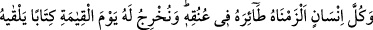
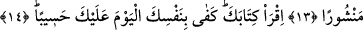
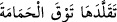

KİTABINI OKU!
13. Her insanın amelini boynuna bağladık, kıyâmet günü onun için, açılmış olarak
bulacağı bir kitap çıkarırız.
14. “Kitabını oku, bugün nefsin sana hesapçı olarak yeter (denilir).”
Mü’min olsun kâfir olsun, erkek olsun kadın olsun, âlim olsun ümmî olsun, halk olsun
reis olsun, hür olsun köle olsun “her insanın amelini” yâni onun için takdir edildiği
şekilde irâde ve ihtiyarıyla kendisinden sâdır olan amelini “boynuna bağladık.” Ameli
sanki gayb ve kader yuvasından kendine doğru uçtuğu için âyette ona “tâir” denilmiştir.
“Boyna bağlama” ifâdesi, bağ ve irtibâtın kuvvetliliğini gösterir. Yâni, kesin olarak
kendisinden ayrılmayacak şekilde amelini ona bağladık. Artık ayrılması mümkün
değildir. Boynuna takılan gerdanlık ve kelepçenin kuvvetlice bağlanması gibi devamlı
bağlı kalır, demektir.
İşlediğim her iyi ve kötü
Ben muradsızın boynuna zincir olur
el-Es’iletü’l-mukhime’de şöyle der: “Amelin bağlanması nasıl boyuna tahsis edildi?
sorusunun cevabı şöyledir: Boyun, süsleme ve lekeleme için işâret yapma ve gerdanlık
takma yeridir. Araplar, insanla beraber olan ve ondan ayrılmayan şeyleri boyunlara
nisbet ederler. Mesela: “Bu benim boynumdadır.” “Şu, senin boynundadır.” derler.
Hayâtü’l-hayevan’da şöyle denilir: Araplar: “
Tekalledehâ tavka’l-
hamâme = O’nu güvercin tasması gibi takındı” derler. Burada ‘onu’ zamiri kötü huydan
kinâyedir. Yâni kötü huyu güvercin tasması gibi takındı, demektir. Çünkü güvercin
tasması güvercinden ayrılmadığı gibi o huy da ondan ayrılmaz. İşte “Her insanın
amelini boynuna bağladık” âyeti de böyledir. Çünkü onun ameli, gerdanlık ve yuların
boyundan ayrılmadığı gibi insandan ayrılmaz.
et-Te’vîlâtü’n-Necmiyye’de şöyle der: “Bu âyet, ezelde insan için ezelî hikmet ve
kadîm irâde ile takdir edilen saâdet ve şakâvete, üzerinde cereyân eden takdir olunmuş
hükümlere ve hallere işâret eder. Bunlar henüz yoklukta/ademde ve nasibi var
edilmesini beklerken onlar için yaratma, huy, rızık, ecel, büyük ve küçük amellerden
takdir olunanları kalem yazmıştır. Her insan, başını yokluktan varlığa çıkarınca hayatı
ve ölümü boyunca ameli onun boynundan ayrılmaz. Nihâyet kıyâmet gününde bu onun
boynunda asılı olarak kabrinden kalkar. İşte âyetin devâmı da buna işâret eder: